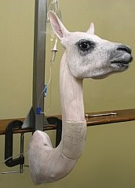

Experimentacion en Animales
Las alternativas al uso de animales en las pruebas de toxicidad incluyen la sustitución al uso de animales, así como la modificación de las pruebas en animales para reducir el número de animales usados, junto con disminuir sus niveles de dolor y de stress. Los test que no utilizan animales son generalmente más rápidos y menos caros. Hasta la fecha, la metodología de muchos test que no utilizan animales han sido formalmente validados por el "European Center for the Validation of Alternative Methods", y han sido aceptados en algunos países. Algunos ejemplos:
• Un test de células madre embrionarias de ratón ha sido validado como parte del reemplazo parcial de conejos y ratones en pruebas para determinar defectos en los recién nacidos.
• El 3T3 (Neutral Red Uptake Phototoxicity Test) que usa células de cultivo para determinar el potencial de irritación de la piel por luz solar.
• El EpiDerm test, un modelo de piel humana que ha sido aceptado como el test universal para el reemplazo total de conejos en los test de corrosión epidérmica.
• La piel humana sobrante de procedimientos quirúrgicos o de donación de cadáveres también puede ser usada para medir la filtración de productos químicos en la piel.
• El uso de humanos voluntarios en pruebas clínicas, para confirmar que los químicos no causan irritación o reacciones alérgicas en la piel.
Alternativas al uso de animales en la educacion y formacion

La mayoría de las Escuelas de Medicina en USA (incluyendo Harvard, Stanford y Yale), han reemplazado el uso de animales vivos en los cursos de fisiología, farmacología y en los ejercicios de práctica quirúrgica, por métodos más humanos y efectivos, como la observación en vivo de cirugías cardíacas (bypass), simulación de pacientes, uso de cadáveres y sofisticados programas computarizados (simulaciones computacionales, simulaciones multimedia, CD-ROM's).
Además de ser éticamente aceptables, los métodos de enseñanza que no utilizan animales son más económicos que los que utilizan animales. Mientras que el modo "tradicional" de enseñanza incluye la adquisición y disposición (traslado, manutención y habitación) de animales vivos; la compra de un kit de CD-ROM's representa un gasto que se hace sólo una vez por un producto que se puede usar repetidamente por muchos años. Las escuelas de medicina pueden ahorrar miles de dólares cada año implementando el reemplazo de animales vivos en sus aulas.
Además, los estudios han demostrado que los métodos de enseñanza que no utilizan animales son más efectivos:
• Un estudio de graduados de primer año de biología demostró resultados equivalentes entre los estudiantes que utilizaron modelos de ratas, que aquellos que diseccionaron ratas vivas.
• Un estudio similar examinó a un curso de estudiantes de primer año de biología, la mitad de los cuales utilizaron métodos "tradicionales" de entrenamiento en laboratorio, mientras la otra mitad usó un software computacional. Los conocimientos de biología de estos últimos era un poco más significativo que aquellos del grupo de enseñanza tradicional.
Algunos web sites (en inglés) describen los métodos y aportan información más específica sobre las miles de alternativas al uso de animales para el aprendizaje: Asociación de Veterinarios por los Derechos Animales, Inventores Noruegos de Audiovisuales (NORINA). Por otro lado, algunas organizaciones animalistas han establecido programas de "préstamos alternativos" para estudiantes que necesitan pedir prestado un software de enseñanza sin animales, o alguna otra herramienta de este tipo, sin tener que comprar el producto: Coalición por la Educación Ética de la Ciencia o la Sociedad Nacional Antivivisección.